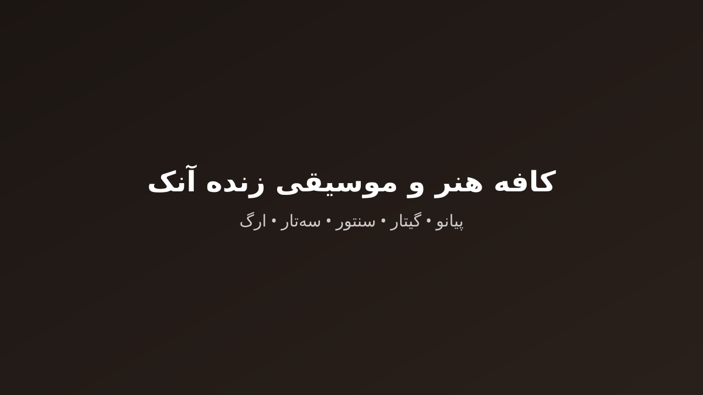

کافه هنر و موسیقی آنک در کرج | اجرای زنده پیانو، گیتار، سنتور، سهتار و ارگ
کافه هنر و موسیقی آموزشگاه آنک در کرج، فضای کافه هنری داخل مجموعه است که میزبان اجرای زنده پیانو، گیتار، سنتور، سهتار و ارگ توسط اساتید و هنرجویان است؛ رزرو میز شبهای موسیقی زنده با تماس یا واتساپ و دسترسی از مرکز کرج و فردیس.
این صفحه پاسخ مستقیم جستوجوهای «کافه ارگ کرج»، «کافه پیانو کرج»، «رستوران سه تار کرج»، «کافه رستوران سه تار کرج»، «کافه سنتور کرج»، «کافه گیتار کرج» است.
کاربری: فضای کافه هنری داخل مجموعه جهت دورهمی هنرجویان، اجرای زنده پیانو، گیتار، سنتور، سهتار و ارگ، و تمرین اجراهای صحنهای

شبهای اجرای زنده پیانو — کافه پیانو کرج
شبهای اجرای زنده پیانو در کافه هنر آنک
شبهای اجرای زنده سنتور — کافه سنتور کرج
شبهای سنتورنوازی و موسیقی اصیل ایرانی
شبهای اجرای زنده سه تار — رستوران سه تار کرج
شبهای دلنشین سهتار همراه با منوی شام و دمنوش
شبهای اجرای زنده ارگ — کافه ارگ کرج
شبهای خاطرهانگیز تکنوازی ارگ و کیبورد
صحنه اجرای هنرجویان و شبهای اوپنمایک
آدرس، ساعات کاری و رزرو میز کافه
- آدرس پردیس مرکزیکرج، شاه عباسی، خیابان دانشکده جنوبی، روبروی کتابخانه امیرکبیر، بنبست کیهان، آموزشگاه سینمایی آنک
- تلفن026-32205016
- واتساپ09125728170 (+989125728170)
- ساعات کاریهمهروزه از ساعت ۱۰:۰۰ صبح تا ۲۰:۰۰ شب (پاسخگویی روزهای تعطیل در واتساپ و تلگرام)
- کد پستی31417

نقاط شاخص نزدیک
- کتابخانه امیرکبیر (۱ دقیقه / ۱۰۰ متر)
- ایستگاه مترو کرج (۵ دقیقه پیاده / ۱.۵ کیلومتر)
- میدان و چهارراه طالقانی (۵ دقیقه / ۲ کیلومتر)
- بلوار شهید بهشتی (۳ دقیقه / ۱ کیلومتر)
سوالات متداول کافه هنر و موسیقی زنده
کافه ارگ کرج چه شبهایی برنامه دارد؟
شبهای خاطرهانگیز تکنوازی ارگ و کیبورد در روزهای شنبهها ساعت ۱۹:۰۰ تا ۲۱:۰۰ با اجرای علیرضا شکیبا برگزار میشود. برای یادگیری همین ساز، صفحه دوره مرتبط را ببینید.
کافه پیانو کرج چه شبهایی برنامه دارد؟
شبهای اجرای زنده پیانو در کافه هنر آنک در روزهای پنجشنبهها و جمعهها ساعت ۱۹:۰۰ تا ۲۲:۰۰ با اجرای مژگان حقمنش برگزار میشود. برای یادگیری همین ساز، صفحه دوره مرتبط را ببینید.
رستوران سه تار کرج چه شبهایی برنامه دارد؟
شبهای دلنشین سهتار همراه با منوی شام و دمنوش در روزهای سهشنبهها و جمعهها ساعت ۲۰:۰۰ تا ۲۲:۳۰ با اجرای سپیده کیانی برگزار میشود. برای یادگیری همین ساز، صفحه دوره مرتبط را ببینید.
کافه رستوران سه تار کرج چه شبهایی برنامه دارد؟
شبهای دلنشین سهتار همراه با منوی شام و دمنوش در روزهای سهشنبهها و جمعهها ساعت ۲۰:۰۰ تا ۲۲:۳۰ با اجرای سپیده کیانی برگزار میشود. برای یادگیری همین ساز، صفحه دوره مرتبط را ببینید.
کافه سنتور کرج چه شبهایی برنامه دارد؟
شبهای سنتورنوازی و موسیقی اصیل ایرانی در روزهای دوشنبهها ساعت ۱۹:۰۰ تا ۲۱:۳۰ با اجرای ماهور منصوریفرد برگزار میشود. برای یادگیری همین ساز، صفحه دوره مرتبط را ببینید.
کافه گیتار کرج چه شبهایی برنامه دارد؟
عصرهای گیتار آکوستیک و فلامنکو در روزهای چهارشنبهها ساعت ۱۸:۰۰ تا ۲۱:۰۰ با اجرای کریم خدادادی برگزار میشود. برای یادگیری همین ساز، صفحه دوره مرتبط را ببینید.
آیا رزرو میز الزامی است؟
برای اجراهایی که در برنامه رسمی با «رزرو الزامی» ثبت شدهاند بله؛ شبهای اجرای زنده پیانو در کافه هنر آنک (رزرو الزامی)، عصرهای گیتار آکوستیک و فلامنکو (رزرو الزامی)، شبهای سنتورنوازی و موسیقی اصیل ایرانی (رزرو الزامی)، شبهای دلنشین سهتار همراه با منوی شام و دمنوش (رزرو الزامی)، شبهای خاطرهانگیز تکنوازی ارگ و کیبورد (بدون نیاز به رزرو).